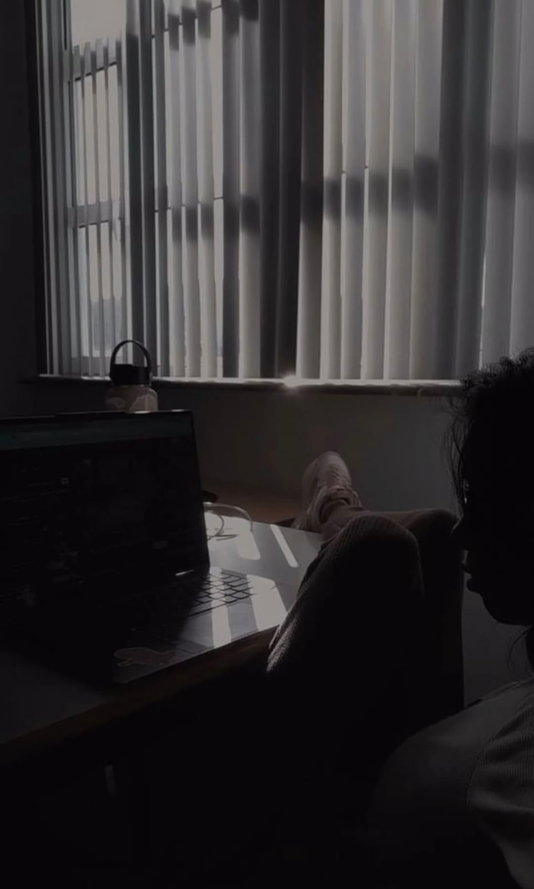
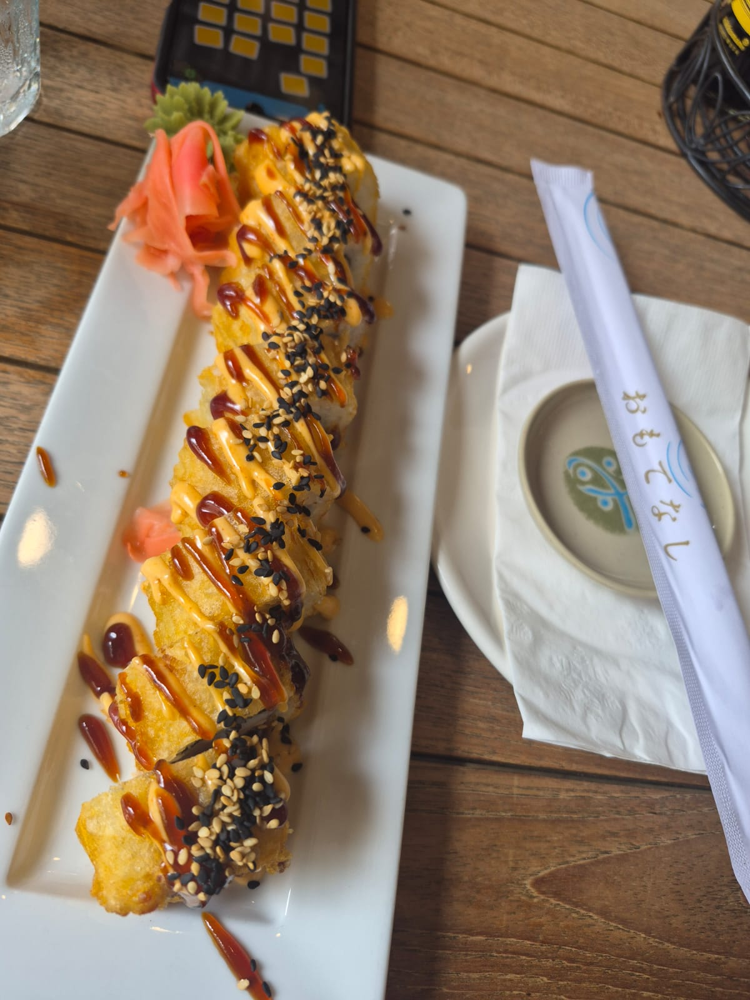

Balancing Code and Creativity
September 27, 2026 by Naaryah

As a Level 2 computing student, I spend a lot of time debugging code and building projects. But what excites me most is when I can combine that technical work with design — whether it’s styling a webpage or experimenting with graphics.
Being the SoSCAI Guild Representative has also shown me how important communication systems are. I enjoy creating layouts that make information clear and accessible, and web development feels like the perfect space to bring those skills together.
Food, Music, and Inspiration
September 29, 2026 by Naaryah

Outside of classes and committee work, I love exploring new restaurants. Eating out is more than just food for me — it’s about atmosphere, creativity, and how spaces are designed to make people feel welcome.
Music is another big part of my free time. My Spotify playlists range from neo-soul to melodic trap, and they often set the mood while I’m coding. Both food and music inspire me to think about aesthetics and experiences, which I try to reflect in my web projects.